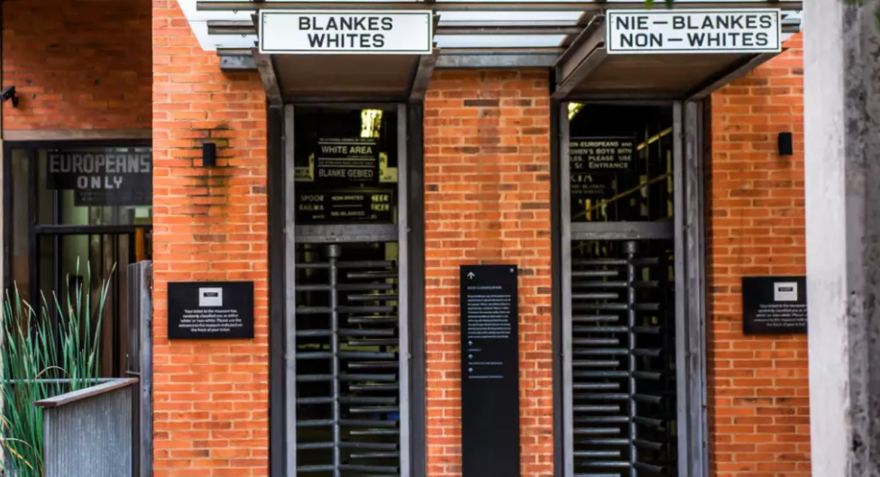
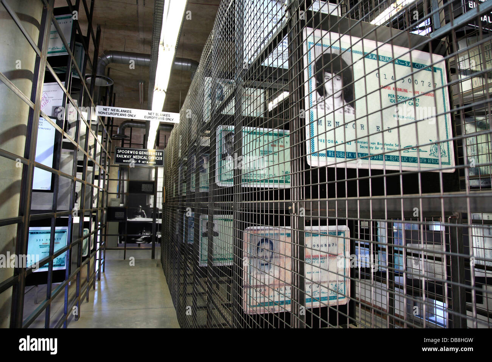
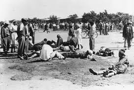
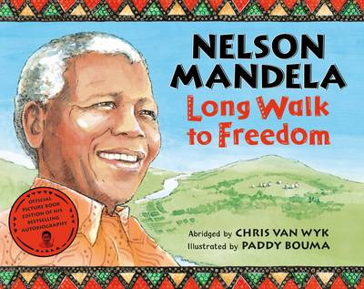

LOCATION:
South Africa is a place of rich history and culture. However it was all taken away by the Europeans. Our family arrived at the Apartheid Museum, made to honour the fight for equality between the people and races. My mother wanted to know more about the apartheid period, but she was not ready for the seriousness of this history. I got out of the car, looked at the entrance, and stood. There were two separate entrances, they read blankes (whites) and nie blankes (non-whites). They were written in Afrikaans, a language brought by the whites themselves. The entrances lead to the same room, there was no other difference. Stunned by the symbolism, we went through both entrances, without a care about which was which.
This is an image of the entrance for the museum. There are two separate entrances for whites and non-whites link
In the museum, every human was silent. They stood there like trees, reflecting on their time branch. We were immersed in a nation, where unjust and prejudiced actions were considered the norm. Where the Europeans thought they were superior, only due to their skin colour. The blacks have died to fight for their equal rights, to stand together like brothers. Further along the tense, tight corridors, every angle was flooded with iron bars. Walking through the 2images of the prisoners highlighted the room. They were all wearing the same grey suit, looking angrily at the camera. On the right side, every prisoner was white, but on the left side, there were substantially more prisoners, and they were all nie-blankes. They were arrested just because they were trying to get equal rights.
This is an image of the prison cells. On the right, there are only white prisoners, and on the left, there are the non-whites.link
On the wall, there was the written history of this long conflict between the whites and the blacks. Reading it, I was flabbergasted. It was the 1920s, Europeans banged open the South African doors, they rapidly took over the country, setting up modern industry, schools and political systems, while stealing and using the natural resources of South Africa. At their new home, the Europeans hated the native people, because they were, extra-ordinary, unusual, different. The blankes refused the black people from high paying jobs, quality education and so much more. Sometimes, they were not allowed near towns. They were moved away from their lands into nature reserves, kept like animals. Even the police were even allowed to shoot against protests link.
After squeezing through those corridors and cells in the museum, we arrived at the room blasted with black and white images. There was an image of a train station, a school, even a bathroom, which contained two entrances, for whites, and non-whites. There seemed no place where people sharing the same country could interact. This was more serious than we thought.
This is an image showing the tough times of the apartheid. Here, the black people are getting tortured by the police.link
The next room was a dark cinema. We sat at a bench and we watched a documentary, illuminated on the wall, about the man who changed it all.
Nelson Mandela was born in the Mvezo clan in 1918 link. He went to a primary school in Qunu, where the teacher gave him his christian name "Nelson." After that, he tried to get an art bachelors degree in university, but he failed because of his race, and after many trials, he eventually got his degree. He then joined the African National Congress to fight for the equality of the black people, but was arrested three times, over 20 years in prison, just so he could be treated equally and fairly as the others. At long last, he was released from the Robben Island Prison, and the government agreed to give other races a chance. Mandela received a Nobel Peace prize and was elected the president of South africa. He died in 2012 at the age of 95, with a cheerful smile.

This is an image of Nelson Mandela in the middle of one of his speeches.link
In the following room, black and white images of Mandela lay on every wall, on every side. He was waving his hand, his cheerful smile, inviting us to join his family of the full South African, and world population. I could not see a care on his face about the background, the race or anything else. His welcoming smile sticks in my head today. Through an ancient radio, I heard him declaring:
We Are One Country, We Are One People.
He said 1000 words about history, humanity, acceptance and forgiveness in just 8.
We Are One Country, We Are One People repeated my father, this would be his favourite phrase for years to come.
The final room was a gift shop. I begged my mother to buy a special book. It was called, Nelson Mandela, Long Walk To Freedom . The same smile lay on its front cover. I would go on to read and enjoy the story of Mandela story multiple times.
This is the cover of the book that I bought. link
As we were approaching the exit door, I thought, even through these dark times, and horrible treatments, Mandela could unite his country, so that blacks and whites stood as brothers. He persevered through tough times in prison, faced harassment, and discrimination but he still had his cheerful smile. When Mandela was president, he did not bother shooting the enemy. He invited them into his cheerful family, he gave forgiveness and acceptance to everyone.